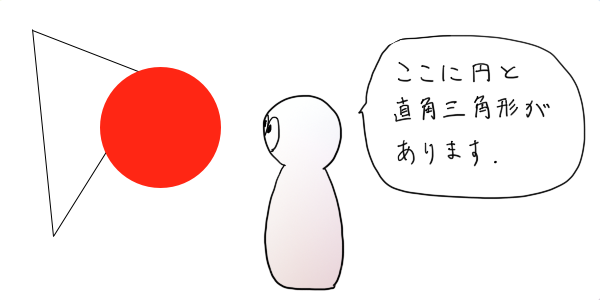
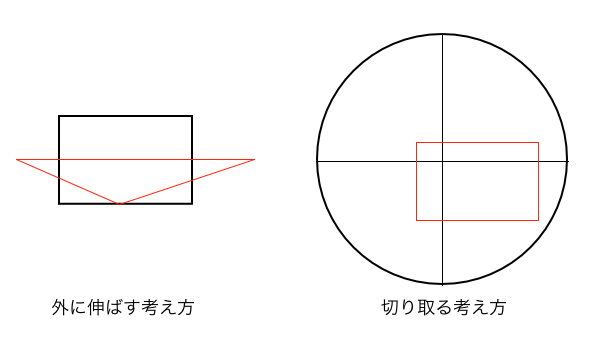
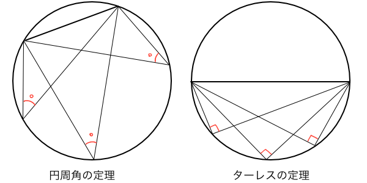

画面を切り取るパース作画とは
ここに一枚の紙があります。風景を描いてください。さあパースを取ろう、と思っても場合によっては画面が小さすぎてはみ出すことがあります、というかほぼはみ出します。画面外のパースはイメージで補完できると思うかもしれませんが、人間の感覚は嘘の塊のようなものなので正確なパースを取ることは難しくなります。見えない部分は都合の良いように歪めて認識してしまうからです。試しに下の画像をクリックしてみてください。

絵になる画面というのは広い空間のごく一部を切り取ったものなので、パッと見で人間が理解できる程のパースの情報が含まれていません。例えばキャラや建造物の接地面が画面のはるか下側にはみ出ていたり、二点透視図法の消失点が画面の両側に追いやられていたりと、大体で描かざるを得ないものです。するとパースに不慣れな初心者は歪んだ立体を量産する愚行に走るのです。やはり慣れないうちはアイレベルや消失点などをしっかりと基準にして丁寧に描くべきだと思います。このとき、小さい画面の外側までパース線を伸ばすという考え方ではなく、しっかりと空間全体のパースを取ってあるグリッドの一部を切り取ると考えてみてはどうでしょう。狭い画面に無理矢理収めようとするのはストレスになるので、予め思いっきり広げておいて一番良いところをピックアップしようというわけです。

切り取り方によって決まる画角とアングル
画面の一番良いところを切り取るというのは、要するに狙い通りのアングルと画角となる画面を作るということです。では、狙い通りのアングルや画角はどうやって見定めればいいのかというと、やはり以前の記事でも注目した視円錐を利用して考えます。今回は視円錐の底面に備わった機能を解説していきます。
視円錐は視界そのものです。円錐形状の内部に存在する全てのものは、人の目やカメラレンズによって捉えられています。そして視円錐の底面に投影されたものが実際に見えている風景になります。視円錐の底面の直径は、必ず画角90°で捉えたときの視界の範囲となっています。ちなみに人の目の画角は約60°程度と言われていますが、人によって視力や注意力が異なりますし、結局は心理的にしか計れないので正確には分かりません。ただ、この60°というのは脳がちゃんと認識できている範囲のことで、単に視界に入る範囲は180°くらいあるそうです。
視円錐の底面の中心を視心（または対角消失点DVP）といいますが、この視心を通る水平線をアイレベルELといいます。視心を通る垂直線（中心線）も描いておくと便利です。そして画面のアングルを考えるときは、これらアイレベルと中心線を隔てて上下左右のどの位置を切り取るかによってアングルが決定します。アイレベルより上側を切り取ればアオリ、下側を切り取ればばフカン、垂直線より右側を切り取れば左側面がよく見え、左側を切り取れば右側面がよく見えるアングルということになります。

また、アイレベルと円周が交わるところに消失点VP1とVP2があります。後はこれらを基準にして幾何学的に作図していくことでそのときのアングルにおけるパースを作図することができます。ここで頭に置いておくべきことは幾何学のターレスの定理です。以前に建築パースを徹底研究！パース理論の基礎知識と描き方の記事の図解でも説明しましたが、簡単に言うと円に内接する三角形において一つの頂点を円周上に沿って移動させてもその頂点の角度は一定であるという円周角の法則があり、その中でも三角形の一辺が直径に等しいときは必ず直角三角形になるというものです。つまりVP1とVP2が既に定まっているときのアイレベルは直径に等しいので、円周上にある頂点の角度は常に90°になるわけです。この円周上にある頂点は視点SPのことで、視点SPが右側にあれば左側面がよく見えるアングル、その逆もまたあります。ここまででアングルの決め方とそのアングルのパースの取り方が分かりました。

では画角はどう決めるのか。それは視心からの距離によって決まります。切り取る画面が視円錐の中心に近いほど画角は小さくなり、円周に近づくほど90°に近くなります。正確には、円周部分は画角90°（広角）、オレンジの円の部分は画角60°、赤の円の部分が画角30°（望遠）となります。視円錐をそっくりそのまま画面とした場合は当然ながら画角は90°となります。しかし望遠パースの画面を切り取りたい場合、画面中央付近のみを切り取るためには必然的に視円錐の直径の1/3くらいの画面にせざるを得ません。つまり視円錐の底面を切り取るとき、画面のサイズや位置で画角が決まってくるということです。

このように視円錐の底面に写る風景を切り取るとき、切り取り画面がアイレベルや中心線のどの位置にあるかによってアングルが決定され、視心からの距離によって画角が決定されるということが分かりました。では、いざパース作画に取りかかりましょう。と言いたいところですが、結局どうすればいいんだ、理屈をこねただけじゃないかって思いますよね。
重ねるだけでパースが取れるテンプレート
パースを取るとき、おそらくアイレベルを決めたり、消失点の位置を決めたり、被写体の大きさを決めたり、大まかに画面レイアウトをイメージしてからパースに乗せていくという作業を行うと思います。これはある程度の知識がある人がやれば様々な絵を描く事ができると思いますが、初心者がやってもありきたりな構図しか上手く描くことができないと思います。パースエディタのようなフリーソフトを使う場合も、パース定規を使う場合も、元となる構図はイメージしておく必要があるので初心者にはハードルが高いです。もしもあらゆるパースに応用できるグリッドのテンプレートがあったら、今までイメージできなかった複雑なパースに乗せて絵を描けます。そこで役立つのがここで紹介するテンプレート素材です。

作り方はいたってシンプルで、円の中にあらゆる画角のパースグリッドを敷き詰めただけです。理論的に説明すると、視円錐の底面にターレスの定理に則って5°間隔で円周上に直角三角形を作図していき、その直角三角形の直角頂点をSPとして、対角消失点DVP（または視心）と直線で結びます。これで様々な画角の二点透視図法のグリッドが完成したことになります。円の中のどこを見ても三本の直線が交差する点があるはずです（手描きなので誤差あり）。この三本の直線は消失点VP1に収束する線、消失点VP2に収束する線、対角消失点DVPに収束する線なので、対角線を使って正方形の作図をすることもできます。

使い方はもっと簡単です。ペイントソフトでレイヤーとして重ねるだけです。そのとき思い出してください、アングルは切り取る位置、画角は視心からの距離で決まるということを。このテンプレートを使うときは、まずテンプレートのサイズを拡大縮小して画角を決定します。もしあなたが新規ファイルのキャンバスサイズを1200×800pxで作成していて、この絵の画角を30°の望遠パースにしたいときは、テンプレートの幅サイズをキャンバスサイズの三倍の2400pxに拡大縮小して、視心がキャンバスに収まるよう配置しておいて下さい。そして右斜め上を見上げるようなアオリアングルの絵にしたいなら、拡大縮小したテンプレートレイヤーの右上付近がキャンバスに収まるように移動してください。これだけです。あとはお好みのように微調整するだけで、望遠パースの右上アオリの構図のグリッドが完成します。
一応サムネはこのテンプレートを使って描いたもので、ザックリ30分程度でこれくらいのパースは取れます。しかしやはり違和感があるようなので奥行きの長さの取り方も次の機会には考えていこうと思います。このテンプレートを使い方については魚眼パースのテンプレートと同じなので魚でも分かる魚眼パースの描き方講座 〜魚眼レンズのしくみ〜の記事のテンプレートと一緒に、後日テンプレートを使ったイラストメイキング的なことでもやろうかと思います。